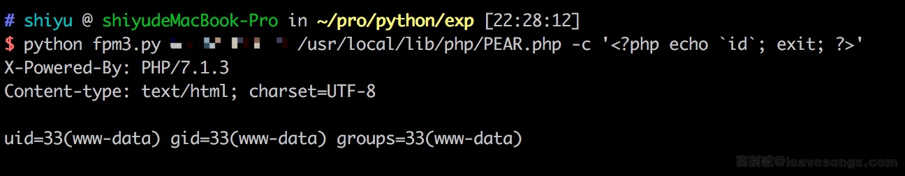

PHP-FPM FastCGI 未授权访问漏洞¶
PHP-FPM（FastCGI 进程管理器）是一个替代性的 PHP FastCGI 实现，为各种规模的网站提供了额外的功能特性，特别适用于高负载网站。当配置不当时，PHP-FPM 可能被直接通过 FastCGI 协议访问，允许攻击者执行任意 PHP 代码。
此漏洞发生在 PHP-FPM 在没有适当访问控制的情况下暴露在网络中，导致 FastCGI 接口可被未经授权访问。
参考链接：
- https://www.leavesongs.com/PENETRATION/fastcgi-and-php-fpm.html
- https://www.php.net/manual/zh/install.fpm.php
环境搭建¶
执行如下命令启动PHP-FPM服务器：
docker compose up -d
服务启动后，PHP-FPM 服务器将监听 9000 端口。
漏洞复现¶
漏洞利用脚本可在以下地址获取：https://gist.github.com/phith0n/9615e2420f31048f7e30f3937356cf75
该脚本允许你：
- 直接连接到 PHP-FPM 端口
- 发送精心构造的 FastCGI 请求
- 在目标服务器上执行任意 PHP 代码
成功利用结果：
